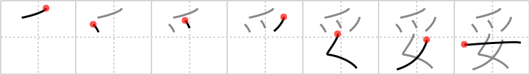

妥
← →
gentle

Reading:
On-Yomi: ダ
Heisig story:
Vulture . . . woman.
Koohii stories:
1) [jimsublimeman] 19-10-2007(175): Overly gentle women are vultures who want to marry you and steal your money - not true but an easy mnemonic!
2) [dingomick] 9-4-2007(126): An eagle must be extra gentle to pick up a dainty woman in its sharp claws.
3) [etpan] 16-7-2008(88): Edward Scissorhands was very gentle, and adored by women in spite of his claws.
4) [Istvan] 20-6-2007(38): Wolverine must be gentle when has scratches a woman's back.
5) [strobrod] 19-8-2009(32): Even gentle women have claws.